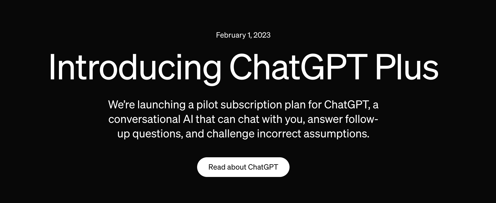

ChatGPT Plus is a paid subscription that comes with many features, so here we will break down the details.

Pricing. ChatGPT Plus is available for $20.00 USD a month, or $240 USD per year. Unfortunately, there are no discounts for a whole year subscription or for students, so it can be very expensive.
Features. Plus users recieve some nice quality of life features. These include faster response times, access to ChatGPT even at peak times, and early access to new features.
ChatGPT 4. The main thing that you pay for with PLus is access to GPT4, a much more advanced GPT that is competely better than GPT3.5, the free version. To learn more about the differences, click here.
Image Generation. Another main feature of ChatGPT plus is DALL-E Image Generation. This is one of the most advanced image generators that can do many things.